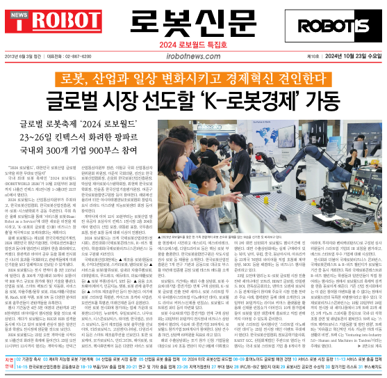

피지오닉스, 한국표준과학연구원 촉감표준 융합연구단과 협업

촉감표준(Meta-Touch) 융합연구단은 국가과학기술연구회의
지원을 받아 2023년 7월 출범하였으며, 한국표준과학연구원(KRISS)을 필두로 한국전자통신연구원(ETRI), 한국과학기술원(KAIST) 등 총 12곳의 정부출연연구기관과 대학이 함께 참여하는 연구단이다. 연구단에서는
가상세계 또는 로봇과 사람의 상호작용에서 고충실도의 촉감을 제공함으로써 몰입도와 현실감을 높일 수 있는 기술을 개발 중이다. 개발하고 있는
기술은 고성능 햅틱 디바이스와 소프트웨어 그리고 다양한 디바이스와 소프트웨어와의 원활한 연동을 위해
필요한 촉감표준이다.
연구단은
촉감측정분야에서 함께 협업하고 있는 ㈜피지오닉스와 함께 로보월드에
제품을 출품했다. 피지오닉스는 최신 AI 및 IT 기술과 촉감측정분야,
헬스케어분야, 소음진동분야의 사업을 전개하고
있다. 로봇핸드, 자동차,
스마트공장, 의료등 다양한 산업군에 측정 및 신호처리 관련 기술을 설계부터 제작, 제어, SW를 연구개발 및 구축하는 통합 솔루션을 제공한다.
이번 로보월드에서 선보이는 하이브리드 촉각센싱 로봇핸드
PHS-100은 제조업, 품질검사, 질감평가에
활용할 수 있도록 만든 전자피부센서가 부착된 로봇핸드이다. 인간의 촉각 감지 능력을 결정하는 기계적
감각 수용체는 대부분 손가락 끝부분의 진피와 표피에 분포되어 있어서 섬세한 작업이 가능하다. 이러한
소체를 생체모방하는 인공피부는 높은 감도, 빠른 응답, 다중 감지 기능(압력, 미끄러짐, 온도, 진동, 분포)을 가져야 한다. 또한
물체의 형성감 및 질감을 평가하기 위해 손바닥면 전체에
대면적으로 감각이 측정되어야 한다.
PHS-100은 로봇 손바닥 전체면에 체결하여 촉각의 기계적
특성을 모사함으로 로봇분야의 광범위한 활용을 하는 솔루션을 제공한다. 손가락 끝부분은 3축힘센싱(Perpedicular<10N,
Horizontal<5N), 8x8 면적센싱(<150kPa),
온도(-10~80℃)를 측정하고 마디와 손바닥면은 크기에 맞게 3x4, 3x6, 4x4 면적(<150kPa)을 측정하여 다양한
핸드 조작에 활용될 수 있다. 핸드당 전체 면적 센서의 개수는 406개이며 500Hz로 수집할 수 있다.

출처 : http://m.irobotnews.com/news/articleView.html?idxno=36442
출처 : https://www.irobotnews.com/news/articleView.html?idxno=36461